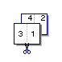
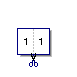

You can print a document using an imposition arrangement to give you
the finishing you require. Trimming a printout into several pages reduces
print cost.
Depending on the printer you are using, this function may not be available.
For example, you print an A4 document of four pages. Two pages of the document are printed on one sheet of A3. The A3 sheets can then be cut in half and stacked to make an A4 document of four pages.
In this example, four prints are produced, but the print count is only two.
For example, you print two copies of an A4 document. Two pages of the document are printed on one sheet of A3. The A3 sheet can then be cut in half to make two copies of the A4 document.
In this example, two prints are produced, but the print count is only one.
Speed:

Double:
Open the printing preferences dialog box after creating a document in an application.
Click the Imposition menu of the Detailed Settings tab.
Select the imposition method from the Imposition
(Speed): or Imposition (Double): list.
The icons show the available page flows of the imposition type selected.
After making any other necessary settings, click OK to close the printing preferences dialog box.
Start printing.